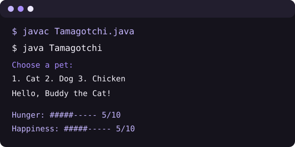
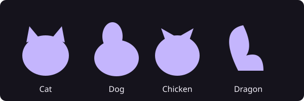
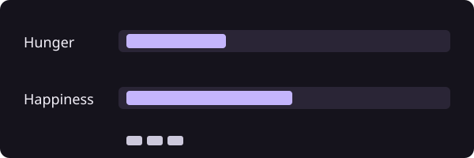

Tamagotchi pet game
A menu-driven pet game I wrote in Java, with a browser version you can play here. Pick and name a pet, then feed it, play with it or take it for a walk to keep its hunger and happiness in balance.

Java source code
import java.util.Scanner;
public class Tamagotchi {
static final int MAX = 10;
static int hunger = 5;
static int happiness = 5;
static String petType = "Cat";
static String petName = "Buddy";
public static void main(String[] args) {
Scanner in = new Scanner(System.in);
choosePet(in);
boolean running = true;
while (running) {
System.out.println();
System.out.println("1. Feed");
System.out.println("2. Play");
System.out.println("3. Walk");
System.out.println("4. Check status");
System.out.println("5. Change pet");
System.out.println("6. Restart");
System.out.println("0. Quit");
System.out.print("Choose: ");
String choice = in.nextLine().trim();
switch (choice) {
case "1": feed(); break;
case "2": play(); break;
case "3": walk(); break;
case "4": status(); break;
case "5": choosePet(in); break;
case "6":
hunger = 5;
happiness = 5;
choosePet(in);
break;
case "0": running = false; break;
default: System.out.println("Pick a number from the menu.");
}
}
System.out.println("Goodbye, " + petName + "!");
in.close();
}
static void choosePet(Scanner in) {
System.out.println("Choose a pet:");
System.out.println("1. Cat");
System.out.println("2. Dog");
System.out.println("3. Chicken");
System.out.println("4. Dragon");
System.out.println("5. Custom");
System.out.print("Choose: ");
String choice = in.nextLine().trim();
switch (choice) {
case "2": petType = "Dog"; break;
case "3": petType = "Chicken"; break;
case "4": petType = "Dragon"; break;
case "5": petType = askText(in, "What kind of pet is it? "); break;
default: petType = "Cat";
}
petName = askText(in, "Pet name (1 to 20 letters, numbers or spaces): ");
System.out.println("Hello, " + petName + " the " + petType + "!");
}
// Keeps asking until the answer is 1 to 20 letters, numbers or spaces.
static String askText(Scanner in, String prompt) {
while (true) {
System.out.print(prompt);
String text = in.nextLine().trim();
if (text.matches("[A-Za-z0-9 ]{1,20}")) {
return text;
}
System.out.println("Please type 1 to 20 letters, numbers or spaces.");
}
}
static void feed() {
if (hunger == 0) {
System.out.println(petName + " is already full. Try playing instead.");
} else {
hunger--;
System.out.println(petName + " enjoyed a snack. Hunger is now " + hunger + ".");
}
}
static void play() {
boolean hungerAtMax = hunger == MAX;
boolean happyAtMax = happiness == MAX;
hunger = Math.min(MAX, hunger + 1);
happiness = Math.min(MAX, happiness + 1);
if (hungerAtMax && happyAtMax) {
System.out.println("Hunger and happiness are both at their maximum, so they stay at 10.");
} else if (hungerAtMax) {
System.out.println("Hunger is at its maximum, so it stays at 10. Happiness is now " + happiness + ".");
} else if (happyAtMax) {
System.out.println("Happiness is already at its maximum. Hunger is now " + hunger + ".");
} else {
System.out.println("You played together. Happiness is now " + happiness + ", hunger is now " + hunger + ".");
}
}
static void walk() {
boolean hungerAtMax = hunger == MAX;
boolean happyAtZero = happiness == 0;
hunger = Math.min(MAX, hunger + 1);
happiness = Math.max(0, happiness - 1);
if (hungerAtMax && happyAtZero) {
System.out.println("Hunger is at its maximum and happiness is at 0, so nothing changes.");
} else if (hungerAtMax) {
System.out.println("Hunger is at its maximum, so it stays at 10. Happiness is now " + happiness + ".");
} else if (happyAtZero) {
System.out.println("Happiness is already at 0, so it stays there. Hunger is now " + hunger + ".");
} else {
System.out.println("You went for a walk. Hunger is now " + hunger + ", happiness is now " + happiness + ".");
}
}
static void status() {
System.out.println(petName + " the " + petType);
System.out.println("Hunger: " + bar(hunger));
System.out.println("Happiness: " + bar(happiness));
}
static String bar(int value) {
StringBuilder b = new StringBuilder();
for (int i = 0; i < MAX; i++) {
b.append(i < value ? "#" : "-");
}
return b + " " + value + "/10";
}
}
How to run it
- 01Save the code as Tamagotchi.java.
- 02Compile it with javac Tamagotchi.java.
- 03Run it with java Tamagotchi, then pick a number from the menu.

Browser version
This version follows the same rules as the Java program, written in JavaScript so you can play it here. It is not the Java program itself.
The rules
- 01Both meters start at 5.
- 02Feed lowers hunger by 1.
- 03Play raises hunger by 1 and happiness by 1.
- 04Walk raises hunger by 1 and lowers happiness by 1.
- 05Each meter stays between 0 and 10.

Hunger: 5 of 10
Happiness: 5 of 10